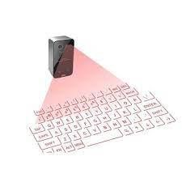

Toekomst.
Toekomst en innovatie:
Volgens de verwachtingen heeft het toetsenbord zeker nog een toekomst, wij kunnen er in ons dagelijks leven niet meer omheen, of je nou een telefoon, laptop, vaste pc gebruikt je komt het toetsenbord erg vaak tegen, naar verwachting zal het toetsenbord wel anders worden, we willen alles effecienter en beter, deze inovaties zullen ook nooit stil staan, er zijn verschillende bedrijven dag in dag uit bezig om hun toetsenbord sneller, efficienter en beter te maken, naar de verwachting is het wel mogelijk dat dingen als spraak steeds populairder worden, dit is namelijk een veel snellere en efficientere manier van tekst schrijven, het nadeel hiervan is dat een computer vaak een andere tekst hoort dan dat er gezegt wordt omdat je een klank bijvoorbeeld net uitspreekt, maar als dit wordt verbeterd dan kan het toetsenbord wel minder belangerlijk worden, verdwijnen zal het toetsenbord nooit, er zijn een aantal factoren hoe een toetsenbord wordt verbeterd op dit moment: de toetsenindeling, er blijven nieuwe ontwikkelingen komen op het gebied van indeling, hierin wordt met name gekeken naarof het comfortabel is en of het efficient is, ergonomie is ook erg belangerijk, een gebruiker wil zo comfortabel mogelijk kunnen typen, dit zal ook bijdragen aan de snelheid waarop iemand typt, extra functies zullen erg belangerijk zijn zoals sneltoetsen maar ook bijvoorbeeld een touchpad op het toetsenbord, voor veel mensen in duurzaamheid ook extreem belangerijk, zo moet het gemaakt zijn van producten die je kan recyclen, het moet lang meegaan, en als er batterijen inzitten moet het toetsenbord lang meegaan zodat je niet te vaak batterijen moet vervangen, tegenwoordig is een toetsenbord met verlichting erg belangerlijk, maar dit spreekt het vorige punt natuurlijk erg tegen, want meer licht betekent ook hogere energieverbruik, maar het licht is erg handig voor de avonden in het donker zodat je toetsen nog goed te zien zijn, je hebt vaak 2 verschillende soorten licht, je hebt rgb wat zoals de naam als zegt RedGreenBlue is dit is ook voor sfeer in je kamer en omdat het mooi is, maar je hebt ook een standaard wit licht dat niet voor de sier is maar erg functioneel. Volgens ons zal het iedeale toetsenbord van de toekomst een functionele toetsindeling hebben, ook zal hij duurzaam moeten zijn in gebruik en ook zodat hij later te recyclen is, een extra functie zoals het ingebouwde touchpad kan erg handig zijn en natuurlijk licht is erg functioneel, maar dit is alleen als we de kennis van nu bij elkaar voegen, als je kijkt in films in de toekomst zie je iets als een hologram toetsenbord, wij denken dat dit zeker erg functioneel kan zijn omdat, het moeilijker kapot kan, als je iets van koffie laat valen gebreurt er niks, het is erg duurzaam en gaat minder snel kapot, het hologram is van zichzelf een soort licht dus je kan hem altijd zien, als je naar de toetsenborden van nu kijkt zijn we al erg ver met inovatie en kan het alle kanten op. De toekomst van het toetsenbord zal echt liggen aan welk toetsenbord je fijn vind is echt voorkeur en zal dus per persoon verschillen.
